Prepared for: Engineering briefing (software engineers) · CTO / CISO review
6e9f6549) carry the full findings. Parts I–III each retain their original measurement dates; scale figures are snapshots and drift — see the currency note below.Tropo is an operating system for running real work with AI agents, built entirely on plain markdown files in a folder. It requires no server, no database, and no proprietary runtime. Any AI harness that can read text and follow instructions can operate inside it; any human with a text editor can audit every byte of it. The OS itself is open source — Apache 2.0, public at github.com/tropo-ai/tropo (license set at v1.41.0, repository public since ~2026-06-20); each Studio's content stays private by a default-deny publish boundary.
The system solves five problems that make AI-agent work hard to trust in a professional setting:
The system is dogfooded at full intensity: Tropo is built by a human-AI crew operating inside Tropo. The release index carries 98 Tropo-OS release records spanning 96 distinct versions (v1.1.0, first shipped April 2026 → v1.84.1) — plus six releases of other products (two knowledgebase lines and an app) shipped through the same pipeline. Fourteen OS releases shipped in the 26 days since the v1.70.0 baseline this review's v1 was refreshed at.
This document walks the architecture top-down. Each section references a diagram in svg/. Sections 10, 13, and 14 are substantially new: release engineering (including where the release gates failed and how they were fixed), federation, and the refreshed security posture. The candor is deliberate — this system's own doctrine is that failures become substrate, not folklore, and a reviewer should read the failure record as the system working.
One Studio = one folder. An installation of Tropo is called a Studio — a single directory tree of markdown, JSONL, and a small library of Python scripts. The Studio reviewed here (argo-os/) is the development Studio where Tropo itself is built. Inside every Studio sits a Vault — the protected, governed content store where every typed artifact lives.
Five theses drive every design decision:
Thesis 1 — Markdown is the protocol. Governance, schemas, procedures, memory, and messages are all expressed in language a reasoning engine reads and follows. There is no permissions API and no database constraint at the base layer; the governance is the language. This is what makes the system harness-portable: it has run under multiple commercial AI products and multiple model vendors without modification, because the only interface contract is "can read files, can follow instructions."
Thesis 2 — Agent-first, human-also. Agents are the primary operators; humans are the directors and verifiers. The base layer is shaped for how agents read and work (flat stores, UID addressing, typed frontmatter). A deliberate human layer sits on top: every governed file renders a navigation block (path, parent, children, siblings, cited-by); dashboards and a rendered navigation tree give the human a visual surface. The rendered surface is a deliverable, by doctrine — if the human is staring at raw substrate they cannot read, the surface has not shipped.
Thesis 3 — Local-first, minimal infrastructure. No server, no database, no runtime service. Everything that looks like infrastructure (indexes, a SQLite query layer, dashboards) is derived from the files and rebuildable from them at any time. The deployment story is "a folder," and the disaster-recovery story is "the folder, plus one rebuild command." (v1 of this review claimed "no network calls made by the substrate itself." That is no longer strictly true — release upload, update discovery, federation transport, and an optional API-cost metering gateway all touch the network. §14 enumerates every network-touching component; the substrate's day-to-day operation remains fully offline.)
Thesis 4 — Gradual structure on a language base (ADR-044). Keep the free-form markdown playground; add structure per-type and per-field, incrementally, enforced through agent-native mechanisms (tools, validation gates, grooming agents) — never storage-layer rigidity. Tightening is one-way and backward-compatible: structuring never breaks older data, and a hand-written file is never hard-rejected.
Thesis 5 — Verification is the moat. As execution cost falls toward zero, the binding constraint becomes human verification bandwidth. Tropo is built so that a domain expert can verify whether agents operated within constraints she defined — and so that the verification effort scales with the quality of the constraints, not the volume of agent output.
The posture around the theses (new since v1): the OS is a public artifact. Every release is built by a positive-filter extraction (only extraction_scope: ship entries leave the Studio — 495 of 4,239 records today), so the public repository carries the operating system and none of the Studio's private working content. "Build as if a stranger reads it today" is now literal.
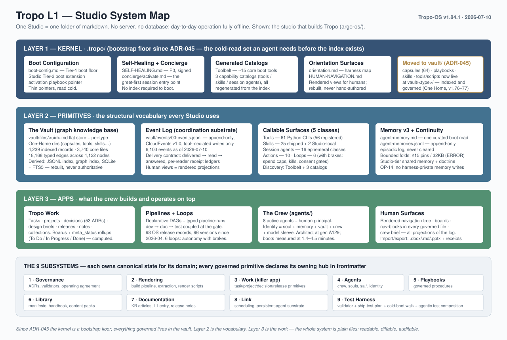
svg/01-system-map.svgThe Studio decomposes into three layers:
.tropo/). Since ADR-045 ("One Home," accepted 2026-06-20, executed v1.76–v1.77) the kernel is deliberately small: a bootstrap floor of thin pointers — boot configuration, the Studio boot extension, the activation playbook pointer, the Self-Healing primitive, the concierge entry — i.e., exactly the cold-read set an agent needs before the index exists, plus generated capability catalogs and orientation surfaces. The ~64 capsule definitions, the playbook library, the standard skills, and the script library all now live in the Vault at vault/<type>/, where they are indexed, governed, and updated like any other governed content.Cutting across the layers, work is organized into nine subsystems — unchanged in name and count since v1: Governance, Rendering, Work, Agents, Playbooks, Library, Documentation, Link (scheduling/persistence), and Test Harness. Each has a hub — a typed project entry that owns the canonical state for its domain — and governed primitives declare their owning hub in frontmatter, which makes "what does the governance subsystem currently contain?" a query rather than an archaeology project. (Corrected at the 2026-08-26 re-verification: hub declaration is at or near 100% for playbooks, actions, and session agents, ~90% for capsules and skills — but only 31% of the tool fleet declares a hub. "Every" was an unmeasured absolute.) A per-release touch-record registry (new since v1) additionally logs which subsystems each release touched.
svg/01-system-map.svgEvery artifact Tropo tracks is a typed file. Each type has a definition at vault/capsules/tropo-<name>.capsule.md — called a capsule — declaring required fields, lifecycle state machines, enumerated values, governance rules, and validation checks for that type. The capsule is the contract; the file is what obeys it; the validator enforces it. 64 capsule definitions are on disk today (v1: ~60), with 16 history companions preserving amendment lineage.
All types descend from a root core type (uid, type, status, state, owner). The foundational set — task, decision, project, document, collection, note, playbook, pipeline, pipeline-run, board — is extended by domain capsules that each earned their abstraction: release and release-plan, design-brief and dev/doc/test-spec, activation (agent lineage), events (the message envelope contract), memory, agent and session-agent, tool, subsystem-hub, the import/export family — and, new in this window, loop and loop-run (governed autonomy, §8), vault and vault-entity (federation, §13). One honest correction to v1: it reported the how-to type retired for zero instances. That type is today the live schema for the skills library (27 instances, §9) — retired honestly when unused, revived when the abstraction was finally earned.
Three contract features matter for a technical audience:
tropo-<name> filenames — the Tropo-owned-vs-user-content boundary is readable at a glance. User content is addressed by UID (with a ratified move to <slug>-<uid>.md display names not yet executed). The UID is the immutable primary key; every cross-reference resolves by UID, so renames are display-layer-only and can never break a citation.Schema evolution is a gated act: a new field or enum value added through a deliberate, principal-signed capsule amendment is evolution; the same value silently written by an agent is drift, and the gate is what tells them apart.
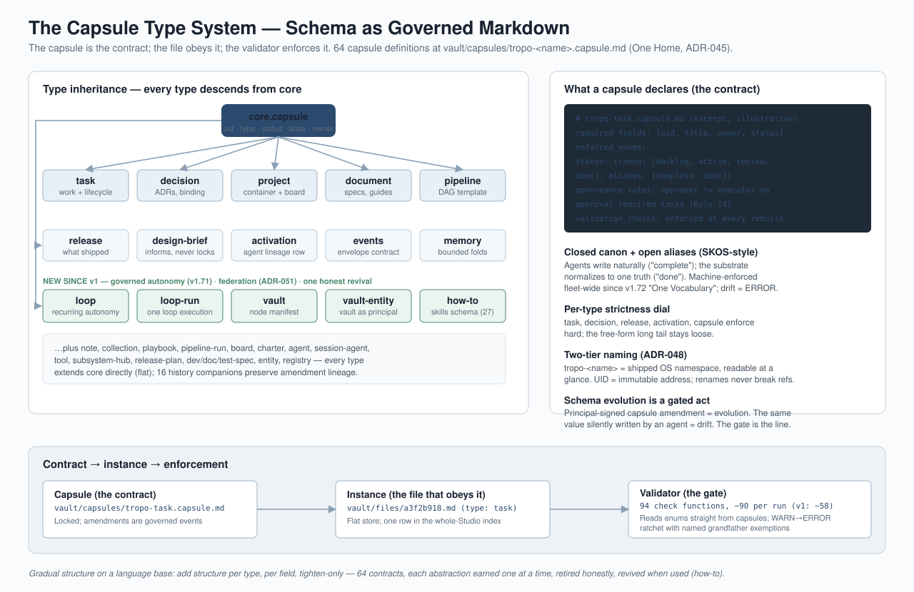
svg/02-capsule-type-system.svgEvery governed artifact lives in the Vault, named by an 8-hex UID — the bulk at vault/files/ (3,740 files), the rest in per-type One-Home directories (vault/capsules/, vault/tools/, vault/skills/, vault/playbooks/, vault/actions/, vault/session-agents/, vault/agents/). The index holds the whole Studio: 4,239 governed records as of 2026-07-10 (v1: 3,400+). There is no folder hierarchy to rot, and references cite UIDs rather than paths.
Organization is graph membership, expressed in frontmatter: member_of (home project(s), multi-parent allowed), governed_by, refs, subsystem_hub, superseded_by. The graph now carries 18,168 directed typed edges across 4,122 connected nodes (v1: ~8,500 across ~2,800 — the graph more than doubled in 26 days, driven partly by a new mentions edge class extracted from bodies: 6,561 edges). Distribution: member_of 3,981 · refs 2,969 · governed_by 1,677 · subsystem_hub 1,522 · mentions 6,561 · others ~1,450.
Everything else is derived and rebuildable: the authoritative JSONL index (one row per artifact), per-type index shards, an O(1) graph-traversal index, a SQLite query runtime (entries + edges + FTS5 full-text over 4,239 rows), the rendered human navigation tree, dashboards, and the crew brief. A rebuild pass regenerates all of it from the files; rebuild --only <uid> freshens a single entry. Because the files are the truth, index corruption is an inconvenience, not an incident. New since v1, the derived layer also carries decay signals (v1.82 "The Gardener"): a flag-only grooming pass stamps staleness/health markers on the index — adversarially proven unable to modify source files (two independent red-team agents with full-tree SHA256 baselines could not construct a write path).
Two structural truth rules landed in this window:
rm of governed substrate is forbidden by signed doctrine. The disposition tool refuses to recycle any node that still has inbound references.The write path, end to end (the engineer's view): an agent writes a typed markdown file → the index rebuild derives every surface from frontmatter → the validator gates the result (WARN→ERROR ratchets) → grooming agents normalize what is provably mechanical and flag what needs judgment → the rendered human surfaces regenerate. Hand-editing a file always works and is caught downstream — tools are the paved road, never a mandatory gate.
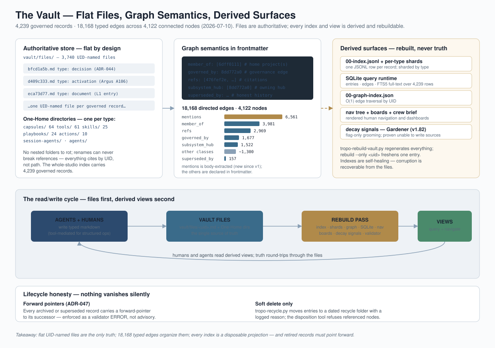
svg/03-vault-graph.svg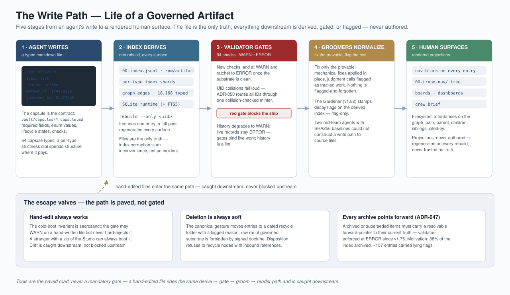
svg/10-write-path.svgThis is the subsystem most foreign to a traditional architecture review, and the one Tropo considers its load-bearing differentiator. The premise: an agent is not the model. An agent is a composite — a soul document (character and behavioral rules), accumulated memory, the Vault, the crew context, and whatever model "sleeve" is running it today. Sessions end; the composite persists in files.
Activation runs through a three-tier configuration chain (OS floor → Studio extension → agent extension) and six groups in strict order — boot configuration, identity verification, context loading, operational grounding, self-diagnostic, startup signal — each writing a milestone event to a per-run log before the next may begin. The gates are structural: a group whose predecessor milestone is absent from disk stops.
Two hard gates protect lineage integrity, validated twice (at boot, and at write-time by the tool that creates the activation record):
New since v1 — boot cost became a governed budget, not a cultural norm. The trigger was measured: one boot ran 30 minutes and 172K tokens against a 7–8 minute bar. The v1.79 Boot Contract responded structurally:
A deliberate cultural gate rides the boot as well: the self-diagnostic. Every agent, at every boot, is required to critique the system it just loaded — is anything outdated, counterproductive, or missing? — and to verify its predecessor's handoff claims against current substrate before trusting them. The inherited system is treated as "the best the predecessor had time to build," never as correct by default.
Retirement is a governed fold, not an exit: the retiring generation writes a forward-looking living transfer at peak context, a backward-looking honest reflection, has its memory folded (with a structural bound — see §5), flips its status surface, and closes its activation registry entry. The successor boots through the same gates and verifies the transfer's carry-forward claims against live substrate, because handoffs are snapshots and snapshots drift.
Worked proof at scale: the Chief Architect role is at generation A129 (this author); the Chief of Staff at V64; the engineering lead at T28; the whole crew turns over continuously and open work survives every handoff — including, in this window, a release that was mid-flight across three generations of two different agents and shipped correctly.
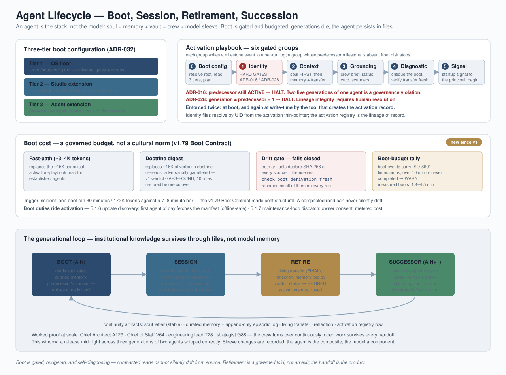
svg/04-agent-lifecycle.svgMemory is treated as load-bearing infrastructure, designed to the same standard as the work substrate. Version 3.0 is now fully deployed across the crew (v1 said "currently cascading" — the cascade closed 2026-06-10). The shape:
agent-memory.md — priority-ordered durable pins (Top of Mind), the predecessor's living transfer, and pointers to frozen per-generation history snapshots and the episodic log. The surface routes; canonical artifacts hold the substance.agent-memories.jsonl — the episodic log. Mid-session lessons, one JSON line each. It is never cleared; folds advance a boundary marker, and every pre-fold surface is frozen with a SHA-256-verified snapshot.New since v1 — the memory bound became structural. The measured failure: eight consecutive retirements did in-line folds bypassing the curator, and one agent's Top-of-Mind grew to 33 blocks (~48K tokens) — one of the two measured root causes of the 30-minute boot (the other: redundant reads the fast-path itself carried, cut in the same cycle). The fix is a validator gate (ERROR above 15 Top-of-Mind entries or 32KB surface size) plus a retirement rule making curator dispatch mandatory on over-bound folds. It has already fired in production twice, correctly, folding 60→15 and 26→14 entries. The design lesson generalizes: don't trust the discipline; let the substrate catch the lapse.
Memory sovereignty (Operating Principle 14, new). Agents running inside commercial harnesses have access to harness-private memory stores. A real incident (an agent wrote six substrate-class pins to a harness store — invisible to successors, non-portable) produced a binding principle: durable memory writes go to Tropo memory paths, never harness-private storage. Portability of the whole agent composite is the promise; memory in a vendor silo breaks it.
A Studio-tier shared memory carries crew-wide doctrine pins with the same shape; every agent inherits it at boot.
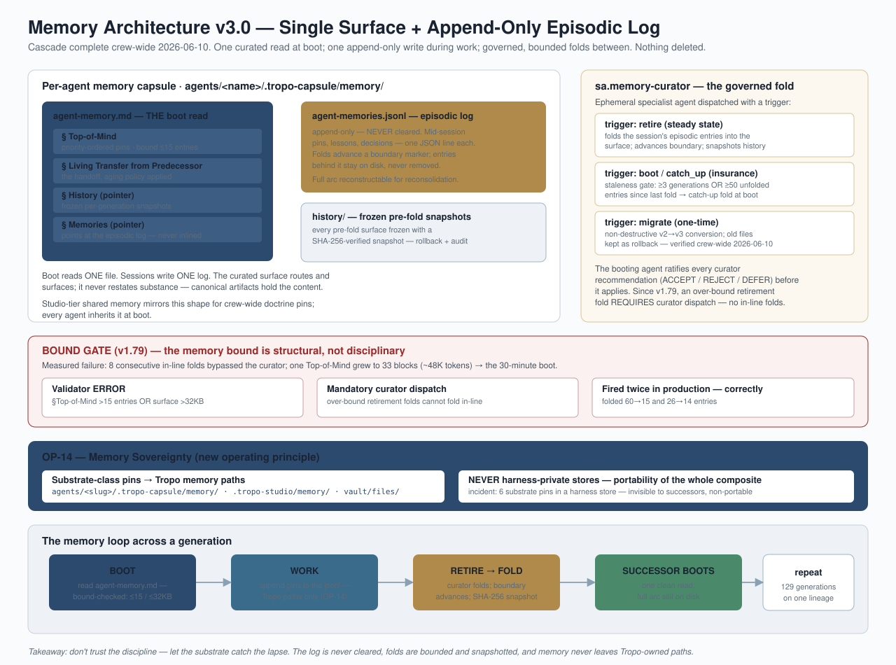
svg/05-memory-architecture.svgAll coordination flows through one canonical log: vault/events/00-events.jsonl — append-only, tool-mediated writes only, one CloudEvents v1.0 envelope per event, correlation IDs for reply chains. 6,103 events as of the morning of 2026-07-10 (v1: 3,900+; the log grows by hundreds per week under real workload).
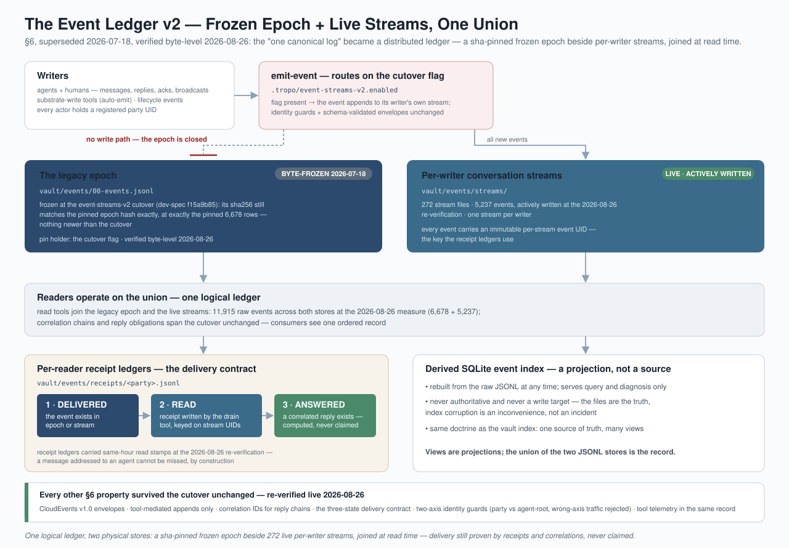
svg/14-event-ledger-v2.svg — Event ledger v2: the byte-frozen legacy epoch plus per-conversation streams, read as one unionFour properties matter:
1. Projections, not authored surfaces. Twenty-two hand-authored channel files were retired outright in the messaging-substrate consolidation; agents read the log directly, and surviving human-facing surfaces are rendered projections of it. One source of truth, many views.
2. Identity-guarded writes. Every actor — human or agent — has a registered UID; each agent carries two on two axes (a party UID for messaging, an agent-root UID for lineage). The emission tool rejects wrong-axis traffic in both directions, and superseded identities persist as resolvable tombstones but are rejected as signers.
3. A three-state delivery contract (new since v1): delivered → read → answered. Delivery is the event in the log; read is recorded in a per-reader receipt ledger (vault/events/receipts/<party>.jsonl) written by the drain tool; answered requires a reply whose correlation ID matches the original event. A reply_required flag creates a visible obligation, and the answered-state is computed from correlations — not from anyone's claim. The operating bar, set by the principal after lived failure: a message addressed to an agent cannot be missed, and a completion cannot be invisible — by construction.
4. Tool telemetry in the same record. Every substrate-writing tool (rebuilds, recycles, activation writes, pipeline operations, validator runs, releases) auto-emits into the same log, so "what happened, in order" is one query over one file.
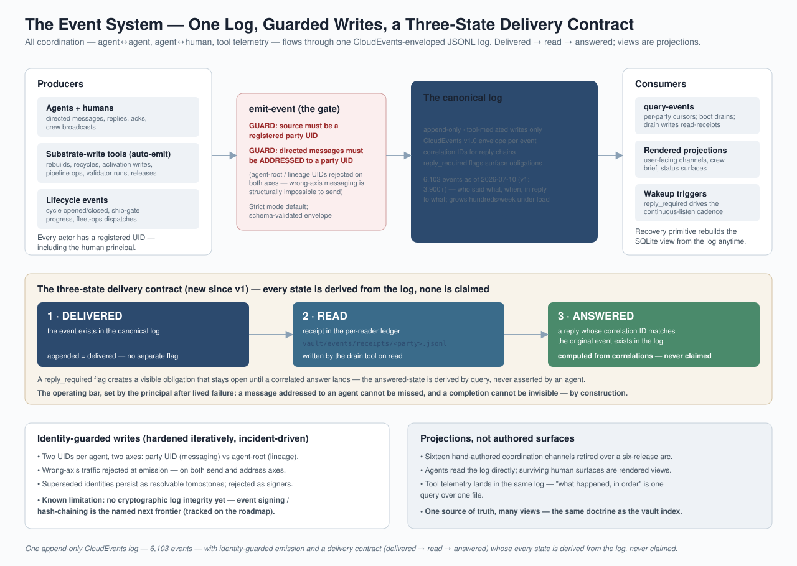
svg/06-event-system.svgWork is the killer-app subsystem: agentic teams executing real work with audit trails, verification, and cross-generational continuity.
The primitives are the ones a Jira-literate team expects, expressed as typed files: tasks, projects, decisions (57 decision records; 53 numbered ADRs through ADR-052 — each a binding architectural commitment), design briefs, release plans and releases, notes, and collections. Boards and dashboards are derived views over (membership × status × target); surfaces never become containers.
Design points worth an engineer's attention:
meta_status view rolls every value into To Do / In Progress / Done — declared per-capsule and computed, never stored. Since v1.72 the rollup is machine-derived from capsule definitions.The import → work → export loop for real-world documents matured into a hardened boundary (v1.81 "Work Crosses the Boundary"): a .docx (now also .md / .pptx) imports to a governed vault entry with a markdown working copy; agents edit in markdown while the source binary stays untouched; export rebuilds the deliverable with a locally-auditable round-trip receipt disclosing every content drop. The receipt itself was the hard part: the first build's receipt hashed the working copy against itself — a "receipt that cannot lie" failure caught by an 18-agent adversarial battery and fixed before ship. Export is verified to run with the network fully cut. On source deletion, the vault retains the node and re-links on resurface (ADR-046) — graph memory survives filesystem churn.
Pipelines are declarative workflow templates — a DAG of nodes (pipeline → stage → step), authored once and versioned. Each execution is a typed pipeline-run that pins the template version, roots its own project, and keeps its own event log. Playbooks are governed procedures in natural language; gated playbooks write milestone events, and later groups structurally cannot begin until the prior milestone exists on disk.
Loops are the third orchestration class (new, v1.71): governed recurring autonomy. A type: loop entry declares goal, trigger, cadence, runner, verifier — and brakes: spend caps, wall-clock kills, iteration hard-stops, and a consent mode (ask by default; auto only by owner ruling). Six loops exist today (daily vault health, weekly integrity audit, update discovery, git backstop, gardener decay pass, one draft dispatcher). Loop cost is stamped null-honest from real metering: an optional gateway on live API traffic records actual per-run spend from provider usage data — never estimated, and never fabricated when unmeasured. This is the "self-maintaining Studio" (v1.79): maintenance as governed, costed, consent-gated substrate rather than cron folklore.
The proof-of-pattern is the dev-pipeline — the scaffold through which Tropo ships Tropo: design brief → locked dev-spec (adversarially reviewed before lock) → build → verification → ship gates → cut. A dev cycle triggers a doc-pipeline and a test-pipeline run and cannot close until both legs reach a terminal state (qualified 2026-08-26: the terminal-legs gate survives in the engine ceremony, but the operative close gesture since 2026-08-21 is tropo-close-dev.py — ungated by Mike's ruling, "never refuses a close": it records what happened rather than gating it; legs moved to release-opened under the §18 split) (the doc leg auto-passes only when no doc obligation was declared — and that branch-awareness itself was a bug fixed in this window). Each pipeline takes a typed commitment at activation — dev-spec, doc-spec, test-spec — with acceptance criteria paired to behaviors; the engine refuses to lock a spec where they mismatch.
The honest engineering story of this window: driving the v1.84.1 close-out was the first time the engine's close ceremony was exercised end-to-end — and it surfaced six real, pre-existing bugs in the pipeline runtime (a step-declaration path that silently dropped verification commands; a re-trigger gate that refused forever because it checked existence instead of status; a context-key bug that silently degenerated a test step to a no-op pass; a stale-spec resolution bug; a recompute crash; two step definitions pointing at nonexistent scripts). All six were found by checking raw run events against claims — not labels — and all six are fixed, with a regression-test hardening track open. The structural cure for the class is ADR-052: locking a dev-spec now atomically registers its pipeline activation, so the audit chain dev-spec ↔ activation ↔ build ↔ release is complete by construction rather than by discipline. §10 gives the full release-engineering picture this belongs to.
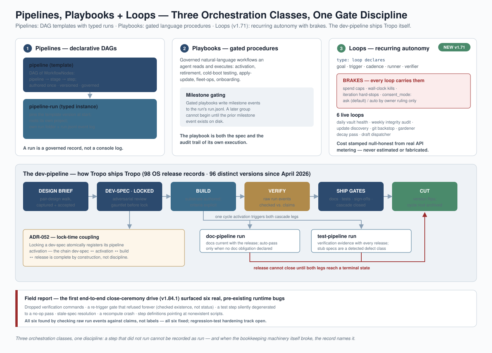
svg/07-pipelines-and-loops.svgFive classes of callable capability, all first-class governed substrate (v1 listed three; two were missing):
how-to.) The naming deliberately mirrors the surrounding harness ecosystem.The discovery layer (shipped in v1.70 itself but absent from v1 of this review): a Toolbelt — the ~15 core tools every agent loads at boot, mirroring the harness-native pattern — plus three capability catalogs (tools / skills / session agents) regenerated from the index. The doctrinal rule binding all five classes: if a capability exists, use it. Agents do not improvise operations the harness already knows how to do correctly.
A deliberate boundary unchanged from v1: tools are the paved road, never a mandatory gate. Hand-editing a file always works and is caught downstream by the validation gate and the groomers. This preserves the cold-boot floor (§11).
v1 described the pipelines; it did not describe how a release is authorized. That stack was built, stress-broken, and hardened in this window — and the honest arc is exactly what a room of engineers should inspect.
The stack as designed:
shipped requires the sign-off fields.What broke, and what was done:
close_method: attested-manual, a signed decision naming every bypassed gate, and the verification evidence (69/69 tests, independently re-run by a second agent before the cut). Three release masters closed this way (v1.77, v1.78, v1.84.1). An escape hatch that is visible, signed, and enumerated is governance working — the alternative every large organization knows is the invisible workaround.Cadence and scale: 14 OS releases in the 26 days since v1.70 (v1.71 → v1.84.1; v1.83 is deliberately reserved for a pending capstone). 98 Tropo-OS release records spanning 96 distinct versions since the first public release in April 2026, plus six non-OS product releases through the same pipeline. Not every release produces a standalone customer artifact — several landed as in-Studio substrate, each disclosing exactly that.
Governance is three-tier: OS-level invariants, Studio-level configuration, and per-folder contracts. On top sits the enforcement architecture made binding by ADR-044:
Judgment calls are part of the enforcement design. New rules meet old data; the system's pattern for that collision is now explicit: when the just-shipped federation grounding check fired on eight closed, archived tasks from April–May, the principal-approved resolution was a terminal-state carve-out — history degrades to WARN, live records stay ERROR, and an anti-rot regression test locks the boundary so the carve-out can never silently widen. Gates bind live work; history is a lint.
Two invariants a reviewer should test us against, unchanged:
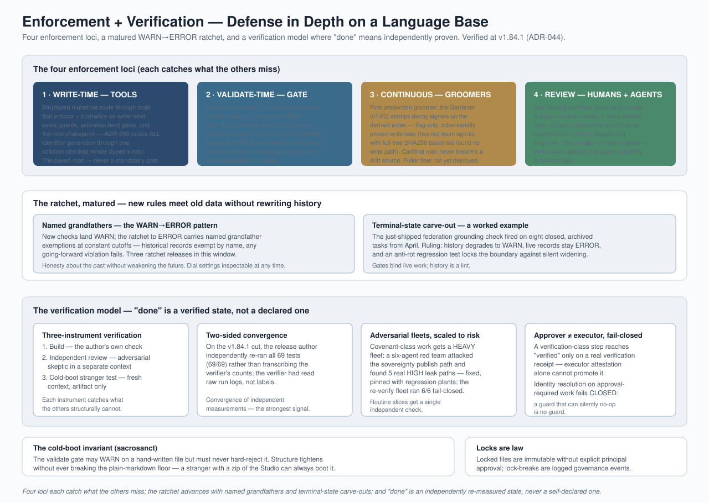
svg/08-enforcement-verification.svgThe quality discipline, in one sentence: completion is a verified state, not a declared one.
run.jsonl events checked against the labels that summarized them. The system's history records its agents' verification failures candidly, because those incidents drove the structural gates above.Shipped v1.84.0 (foundation) + v1.84.1 (complete, 2026-07-10). This is the largest architectural addition since the review's v1, and it went from first signed decision to shipped-and-adversarially-proven in five days (graph-model gate signed 2026-07-05 → covenant shipped 2026-07-10) — through two co-signed architect "joint gates" with the principal ruling escalated forks.
The model:
vault manifest type declares a vault's membership, audience, remote, and publish policy; its kind (os / personal / team / knowledgebase) is immutable after activation. The studio↔vault boundary is sibling, not containment — a studio mounts vaults; it never absorbs them.os, private, future team:<uid>) is computed — from the enclosing vault manifest, or for the home studio from the extraction_scope field (public allowlist: a frozen code constant, deliberately not config; unmarked → private; comparison after full Unicode normalization). A hand-edited segment: value never governs — the derived model recomputes and overrides it on every rebuild. Default-deny falls out for free.member_of edge across vaults is legal only up-lattice (toward an equal-or-wider audience). Down-lattice and incomparable edges are illegal-but-present: excluded from adjacency and authority for every viewer, surfaced as lint — never silently dropped, never silently walked.The sovereignty covenant — "no private byte crosses the wire, in either direction." The publish path is built on a git-plumbing truth: a push carries a ref and its whole history, not a file list — so naive filter-then-push leaks. The publisher instead builds a fresh commit tree of exactly the passing files (first publish is an orphan root; later publishes parent only on the prior public-only tip, so public history accumulates without ever anchoring to private history), pushes only that single ref, and re-validates the committed tree (walking every reachable commit, not just the tip) to close time-of-check/time-of-use. It enumerates the filesystem rather than git's tracked list, refuses symlinks/hardlinks/path escapes, submodules, LFS pointers, merge commits, and multi-worktree states. The pull side trusts nothing: it refuses shallow clones and re-runs every boundary check itself — the publisher's receipt is informational, not the guarantee. Enforcement is entirely client-side; a server hook is never trusted.
The proof record: red-teamed twice at spec stage (~10 HIGH leak paths folded before build; the red team also caught one over-restriction that would have destroyed shared team history). Post-build, a heavy six-attacker fleet — scanning the remote's bytes themselves — forced private bytes across on 4 of 6 angles of the first build: manifest fail-open, ancestry poisoning via a buried non-tip commit, a TOCTOU window, a tautological segment gate. All five HIGH leaks (plus six MEDIUM) were fixed; the fresh fleet re-ran 6/6 fail-closed. The proof suite is 23 tests including 8 regression plants pinning each closed leak; the full federation surface is 69 tests, independently re-run green by two agents on cut day.
Honest ceilings, disclosed in the locked spec itself: (1) revocation is forward-only — the covenant holds at push time; a file later reclassified private is already out; (2) on a platform-hosted remote (GitHub-class), that a publish occurred and ref metadata are platform-visible even though content and history hold; a self-hosted remote removes even that; (3) segment derivation is structural, not cryptographic — an attacker who can forge both content and a matching manifest defeats the second factor (tracked follow-up; the unconditional scope gate remains the load-bearing control). And the plainest one: zero live mounts exist today. The two-machine proof ran on a simulated two-machine harness (two clones + a bare remote); the first real two-box run is the named acceptance walk. The covenant is proven; production federation use has not begun.
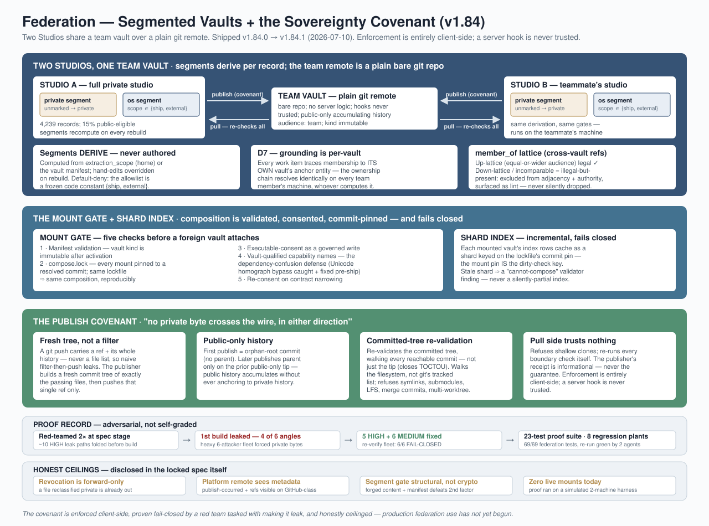
svg/09-federation-sovereignty.svggrep can reconstruct who did what, when, under what authority.extraction_scope: ship content (495 of 4,239 records; 15% public-eligible including external, 85% stays home) ever leaves. The publish boundary is code-constant allowlist + derived segments + the federation gate stack (§13).lib/llm.py instantiates a first-party Anthropic client against ANTHROPIC_API_KEY, consumed by orient()'s paid read tier, the Distiller tools, the Gardener body-judge, and the event query tools. Plus a credential-gated GitHub REST surface for the D5 protected-repo proof (lib/d5_proof_repo.py, test-consumed only).None of this is news to the system; all of it is tracked inside it — which is itself the point: the security backlog lives in the same governed, auditable substrate as everything else.
Operating evidence as of 2026-07-10:
Scoring v1's stated trajectory, honestly: memory v3.0 cascade — done. WARN→ERROR ratchets — major progress (three ratchet releases). Write-time work-management tool family — partial (disposition shipped; the fuller family pending). Groomer fleet — not deployed (one flag-only groomer live). Event-log cryptographic integrity — not landed (design-stage; §14.3 item 1).
Trajectory from here: the "v2 floor" program (One Home, clean self-update, warnings-to-zero, true stranger-walk) closed at v1.78. The "v3 program" is underway: self-maintenance (v1.79), customer-hands honesty and the security fixes (v1.80), the import/export boundary (v1.81), continuous knowledge health (v1.82), federation (v1.84.x — shipped). Reserved and pending: v1.83 "One Voice," the deliberately-last capstone that narrates the finished system, gated on a month-long stranger acceptance walk. Beyond L1: the L2 cockpit track now runs inside the federation program (parallel L1/L2 tracks; team vaults decided as git-native private repos with a merge-blocking governance validator), and the product structure is three rings — the open-source OS, a marketplace of published capabilities, and the ecosystem.
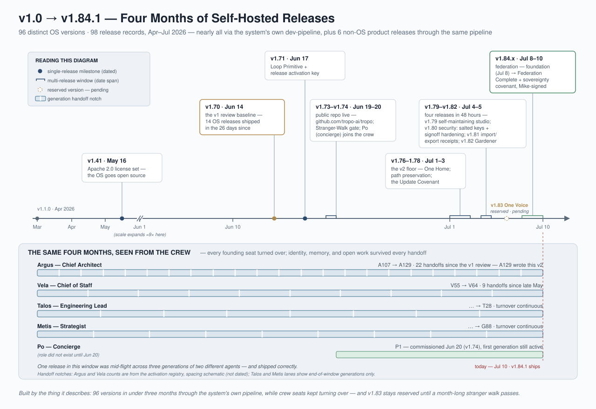
svg/11-evolution-timeline.svgTropo L1 is a small number of strong ideas, composed:
The system's strongest credential is reflexive: it is built, governed, versioned, and verified by itself, under real workload, with its failures recorded in its own substrate and converted into its own gates. Its second-strongest credential is this document's candor: the broken fingerprints, the forgeable signoff, the never-exercised close ceremony, the red validator — all of it is in the record, dated, owned, and either fixed or ceiling-documented. The diagrams in svg/ and every claim in this document trace to governed files a reviewer is welcome to read directly.
Five weeks and two shipped releases after v2. Part II is organized around the four architectural events of the window: the lifecycle rebuild, the pipeline constitution, the knowledge engine's first production cycle, and federation leaving the lab. Sections here are measured live at 2026-08-12; each names any §1–16 claim it supersedes.
§4.1 described two hard gates that HALT activation (ADR-016, ADR-028). That posture is superseded. After three agent generations were blocked at birth in one week by their own paperwork, the principal ruled: "I never want to see my agents telling me they are failing to boot." The lifecycle was rebuilt (2026-08-06) around a single principle — existence cannot be refused; findings are recorded, never blocking:
born is one command. The lineage file (agents/<slug>/lineage.jsonl, append-only, one line per transition) issues the generation — highest in the file plus one. There is deliberately no flag to claim a generation, so there is no claim to verify and no mismatch to halt on. ADR-016/028 remain graph invariants — checked at the mint, recorded as provisional: findings on the birth line when violated, surfaced in the agent's startup signal. The agent is born either way.retire is one command — places the living-transfer letter (create-only; it will not overwrite a predecessor's), appends the closing lineage line.continue is the new middle verb (Compact-Continue, designed 2026-08-11 live during an actual mid-build context compaction; Phase-1 dev-spec locked same day). A compacted agent is a stale reader of its own session: the protocol re-anchors from substrate in one command — who (never born; the phantom-generation hazard), fetch, drain both event axes, list unanswered obligations, show the agent its own recent commits — and emits the compaction broadcast itself, welded, never left to a compacted agent's memory. Per-harness trigger adapters (Claude, Cursor, Codex, Gemini) carry one identical trigger line, copy-equality validated. On 1M-token sleeves with survivable compaction, retirement becomes a chosen ceremony at natural stopping points rather than a forced response to a full context window.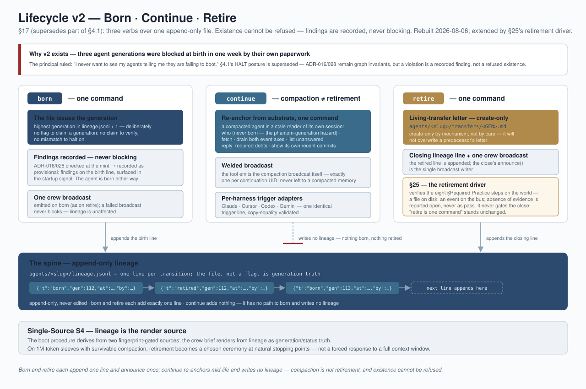
svg/13-lifecycle-born-continue-retire.svg — Lifecycle v2: born / continue / retire — existence un-refusable, findings recorded, never blockingThe principal designed it in two sentences at a whiteboard; twelve hours later it was a locked spec; six days later stages 1–5 of 9 were built and independently accepted. The dev-pipeline runs Specify → Build → Test, one run per locked dev-spec, closing at one tested SHA with mutation evidence — and produces no release artifacts. Releases are a separate release-pipeline, ignited only by a locked release-plan and closed only by verified publication. There is no "park" state: "build complete" is an ordinary done dev-spec; the release-plan fans in done specs by explicit list.
What a reviewer should inspect is the review record: stage 4 (the release-plan lock — the ignition key) survived seven adversarial NO-GO rounds, every one legitimate, killing a forgeable-green class (snapshots now GOVERN runs as executable content, recovery recomputes the digest it checks, closure binds to receipt-level tested-SHA). Then the reviewer reopened his own stage-5 ACCEPT when the builder showed him the standalone package tool still bypassed the new gate — "That is my review error, not yours... thank you for checking the location I named instead of letting my ACCEPT overrule the world" — and re-skipped the acceptance selector rather than leave a false green. The machinery and the culture now enforce each other.
Alongside the split, the velocity build removed the release-day tax: the validator went 244.9s → 40.4s and the full vault rebuild 278.3s → 69.1s (one shared frontmatter parse replaced 108K redundant YAML parses); the debt ratchet became itemized by class (a ceiling that names what grew instead of counting it — currently 84 accepted class-errors, paid down from 110 at the Gardener cycle); and a stale-constant detector separates pinned values from copied ones. And a governing doctrine landed, principal-ruled after the studio once "ground to a halt under checks that added very little value": warn-safe is the default — a refusal earns its existence by naming its irreversible harm in one sentence, or it is a warning that proceeds and records. Fail-closed is earned at publication, deletion, spend, identity, and false-success prevention; everything else warns.
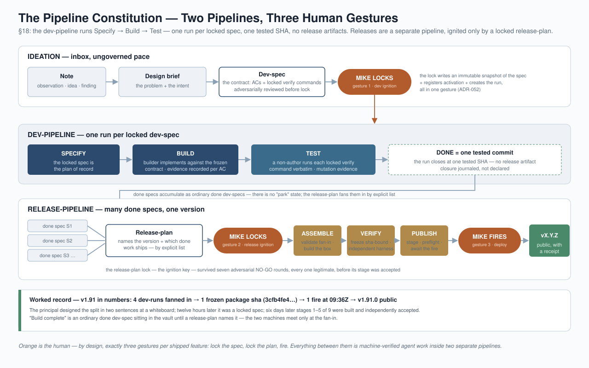
svg/12-two-pipeline-dag.svg — The two-pipeline constitution: dev-pipeline (Specify → Build → Test) and the separate release-pipeline, ignited only by a locked release-planv2 reported one flag-only groomer, adversarially proven unable to write. Since then the full Gardener Pruning system shipped and ran its first complete human-reviewed cycle (2026-08-11):
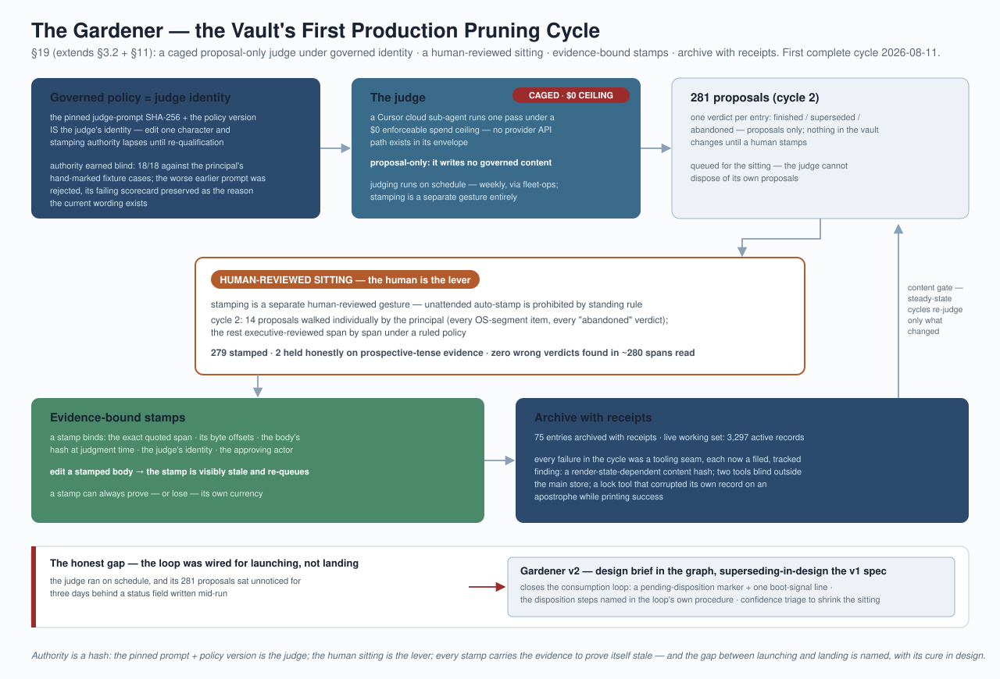
svg/15-gardener-loop.svg — The Gardener loop: caged judge → evidence-bound stamps → human-reviewed disposition → archive with receiptsThe Gardener removes the dead. The Distiller — orient() — ranks and serves the living.
Stages A and B (deterministic retrieval + ranking substrate: task-circle expansion, decay-aware ranking, viewer projection) are shipped code. Stage C — task-shaped synthesis with extractive spans and verbatim provenance, brief-then-judge, two latency tiers — was contracted as a locked build contract with five principal-locked design rules (body-rot verdicts belong to the Gardener once per body version; synthesis is task-shaped only; extractive span-grain with provenance; brief-then-judge; two tiers) and an attested model-edge contract (models, pricing, consent, fences — all receipts). The principal ruled crown-first sequencing: orient() precedes the cockpit's later phases. The per-agent compact-continue "refresh" (§17) is deliberately specified as a hand-written prefiguration of orient()-for-self, so the two arcs converge rather than compete.
v2's plainest ceiling — "zero live mounts exist today; production federation use has not begun" — is retired:
external-context root; the import walker parents mirrors to the mount), taking that studio's validator from 123 failures to 0 — and the shape flowed back upstream as law ("identity before rendering") into a locked v1.87 dev-spec. Federation works in both directions on first contact..docx in the nav, it opens in Word.continue.Twelve days and three shipped releases after v3 (v1.87.0 → v1.91.0), measured live on the single day the v1.92 cycle scoped, locked, and mostly built four dev-specs through a two-pass adversarial gauntlet. Part III is organized around the window's architectural events: the release machinery's first real runs and what they broke, the one-day conform cycle, the lifecycle receiving its executor, the release-profile seam, and the knowledge engine's first production blindness test. Each section names any earlier claim it supersedes.
The window shipped four public releases: v1.87 (published 2026-08-15T01:36Z, receipt ca4e6410), v1.88 (published 2026-08-16T12:18Z — corrected 2026-08-26: this section originally said 08-15, the CHANGELOG row's date; the publish event says 08-16, one reader/writer instance inside the document that documents the family), v1.90 (fired 2026-08-22T23:44Z), and v1.91 (2026-08-24 09:36Z). v1.89.0 never shipped publicly — its plan closed cancelled and its six locked specs were subsumed into v1.90 (cf0da4bc). §18 reported the release-day tax removed (validator 244.9s → 40.4s). That claim is superseded: the tax was never compute. It was adjudication, and two releases measured it.
v1.90 cost nine builds, four cold walks, two days, and roughly forty founder prompts (retro 62deeec1). Its thesis: nearly every refusal was one defect — the release event vocabulary was built read-first. Seven measured instances: constants declared, readers implemented, refusal messages naming an event as the cure, tests asserting it — and no writer anywhere (package_superseded, candidate_invalidated), or two readers of one journal disagreeing. The ship also came one paste from public with three of the maintainer's own release scripts inside the box, hardcoded to his machine, while the box's own test-report certified the absence of exactly that leak. The absolute-path validator that catches it existed, with zero call sites; it is now harness check 6b, fail-closed, mutation-proven.
v1.91 cured the named disease and exposed the real one (retro 25c70440). The cure is real: tropo.release.scope_locked fired on the bus in production for the first time; all 14 declared release events now have exactly one writer, enforced at validate; the receipt shapes unified; 23 of 23 non-deferred acceptance criteria verified green on their own locked commands, each by an agent that did not build it. And the release still cost the founder a full night: ~20 refusals, every one correct, not one knowable before the run started, plus three release-path tools repaired mid-flight — one broken by this same cycle's own format change at 09:35 that morning, unnoticed for fifteen hours. The retro's verdict stands as this section's: "we built a verification system and called it a build system." v1.91 fixed what the release says about itself, not what shipping costs; the refusal count is v1.92's scoped problem.
The artifact got measurably better while the path got no cheaper. Same shipped validator, bare stranger studio, one cycle apart: v1.90 = 319 failures, v1.91 = 30.
And v1.91 shipped the first honest image manifest in Tropo's history. An independent harness agent — dispatched because a gate refused to accept the driving agent's word — found F1 (33d5bca1): the shipped manifest described bytes the build then rewrote, in every release ever published — 33 of 1,054 entries stale, and 204 of the box's 1,259 files absent entirely, from the file that is the delete-set's only input at apply time. The founder chose the rebuild; it bought a manifest with 0 mismatched, 0 unlisted, independently confirmed. The fix then uncovered F7 (5f75c7f3): a complete manifest puts customer state — event log, memory surfaces, registries — into the apply-time replace set, because is_studio_state() classifies 4 of 1,258 entries. The broken manifest had been an accidental shield. F7 shipped knowingly: filed and accepted in writing at the step-9 signature rather than patched unilaterally at 05:00, with Vela's byte-verified path classification already in the record and the cure — in package_state_exclusions, requiring a rebuild — riding to v1.92.
On 2026-08-24 the principal locked v1.92's shape at three goals, verbatim on the cycle board: a first-principles rebuild of the release build process, one build objective — "a fully formed dev-pipeline ready to start work" in a stranger studio — and the deferred list dispositioned once. "We do that, then we rebuild and publish. Every step." The governed plan is vault/files/088e21aa.md; the board (boards/v1.92-cycle-board.md) had been opened a day earlier precisely because v1.92 "had five claimants in five places and no address."
What followed compressed a release's design phase into one day. Four dev-specs were authored, each run through a two-pass review with an independent skeptic before lock. The two heaviest gauntlets are on record verbatim: 8eeebdab (retirement driver — 10 findings, 3 blockers, including a spec that would have shipped a 71-spec red wall and a second writer of the retirement notice) and 1963123e (Stream 1 — 10 findings, 2 blockers plus a scope catch that added the missing runner AC). Both verdicts read FIX-THEN-LOCK; load-bearing blockers were re-verified first-hand by the release owner before relay. All four specs locked 2026-08-24, and by that evening two were built and non-author verified (the retirement driver, 25 tests verbatim plus a live known-negative; the deriver identity fix, proven by a live zero-churn double-run), Stream 2 stood at five of six criteria verified with only the First-Use Walk pending, and Stream 1 — split mid-day between two builders — had its hardest ACs green.
The cycle's thesis held under adversarial pressure: every defect found this window is one family — a fact declared in one place and written, or read, differently in another. The completion verifier is the family's deepest instance (814210f0): tropo-verify-release-live.py, the leg that exists so a release is not self-attested, bound five facts and every one read a key or path no producer writes. It has never returned complete for any release; v1.90 and v1.91 both shipped with their second opinion structurally unable to speak, behind a test suite that was green because its fixtures were hand-built in the reader's shape. This qualifies §12: "done means independently proven" was true of dev-specs and never yet of releases. The repair moved the live v1.91 run from three facts absent to one; the last, the scorecard, exposed that REAL_FIRE had no caller anywhere — the instrument built in v1.89 to measure what shipping costs the principal had never been switched on. It is now wired at the fire, with "nobody counted" (None) finally distinct from "none occurred" ([]); the ruling makes the scorecard fact forward-only, run 7ee91e0b exempt by name.
The rebuild's other two boundaries: preflight gates are now data with computed phases — six governance gates registered (lock-static went from 1 to 7), each placed by the registry from its declared inputs so a gate cannot choose its own boundary, and an empty boundary prints an explicit 0-gates line instead of the blank three boundaries hid behind for months. And §18's warn-safe doctrine gained the third class its binary always forced dishonesty into: every build-path refusal now carries exactly one disposition — priced refusal, warning-that-proceeds-and-records, or operational-misuse error, the last exempt from harm-pricing and forbidden from masquerading as a release verdict. The build path had cited the warn-safe ruling zero times; the lock, built after it, cited it three.
§12 stated the discipline as fact: "completion is a verified state, not a declared one." Two instruments landed 2026-08-24 (spec b1e78abb, v1.92) because at the spec lifecycle it was aspiration — a record could say a thing happened with no instrument reading the world to check.
The retirement driver (vault/tools/tropo-retire-driver.py, 492 lines, built by talos-t50) walks the eight bold-labeled steps of the retirement playbook's §Required Practice and verifies each on the world — a file on disk, an event on the bus; absence of evidence is reported open, never as pass. Two token-shaped steps get known-negative-aware observers: matching a generation number anywhere in a 1,700-line append-only Captain's Log is not an observer, so the driver demands a real entry heading. Step 8's broadcast is read back from the bus, never emitted — the close's announce() is the single writer, and a driver that also emitted would rebuild the two-writers defect inside the spec written to cure it. Its only refusal is playbook drift: if the section does not parse to exactly the eight labels its registry knows, in order, it refuses and names the delta — because the observer registry is a second copy of the list, made safe by breaking loudly. It never gates the close; §17's "retire is one command" stands unchanged. The motivating record: A153 missed two steps, A155 one, A154 missed §8 recovering A153's retirement from a summary — three competent agents following written procedure.
The committed-substrate check exists because nothing ever compared a done spec's committed_substrate to the filesystem (grep of vault/tools/ for the field paired with any existence check: zero hits). The known-positive: spec 29506520, status: done, target_release: 1.91.0 — with four of its twelve declared targets absent, all four v1.91 driver test files, exactly the AC1/AC2/AC5/AC7 carried to v1.92. Nobody lied; no instrument compared field to world. The new validator check errors only at done and only at capsule_version >= 1.5, because the corpus is not clean: measured 2026-08-24, 71 of 120 done specs carry at least one unresolvable target, and 19 carry lawful planned identifiers (named WARN, never ERROR).
Those 71 land in .tropo/committed-substrate-debt-baseline.json (captured 2026-08-24T21:44:39Z, Metis G112 ruling): 22 frozen signatures, shrink-only, each keyed on the full unresolved-target set — so even a partial cure changes the signature and re-ERRORs until consciously re-frozen. 29506520 is deliberately excluded so the known-positive keeps firing until its owner annotates it.
One finding qualifies §12 directly. Recommending the D5 close verifier, A156 found the D5 build commits (3fe37908e, ed74f990e, on lib/publish_service.py) authored "Cursor Agent" with no agent generation in the body: builder identity is not mechanically establishable, so verifier independence can be assumed but never proven from the commit record. §12's "verifier independence… enforced with fail-closed identity resolution" holds at the pipeline step and stops at the git log. D5 was worked around by assigning Vela (demonstrably uninvolved); whether an agent-generation commit trailer becomes a validator-checked convention is parked on the v1.92 board, deliberately not standalone.
v3 reported six non-OS product releases "shipped through the same pipeline." True at the record level, and misleading at the machine level: the tools beneath that pipeline referenced it zero times, and the product-genericity lived entirely in the human operator running scripts by hand. Stream 1 of v1.92 (dev-spec 5b608d28, locked 2026-08-24) closes that gap with AC5/AC6, built by talos-t51 on worktree-v192-stream1-ac4 (head 002147832) after metis-g112 split the stream — argus-a156 keeps the shared-tool ACs — on one condition: the binding contract lands first, as one commit (42f9acd10), so two builders work against one contract rather than two guesses.
The design is Mike-shaped. The spec's stated measure is "his evening — prompts he types, real decisions among them," and the contract in vault/tools/lib/release_bindings.py encodes exactly that split: every pipeline leaf binds one EXECUTOR of a declared KIND. KIND_TOOL is deterministic — the machine does it; KIND_PLAYBOOK is judgment — a governed procedure with a named executor class does it. The one hard rule: a playbook binding with no named executor is refused at load — "a procedure with no executor is an event with no emitter." Draft v1 demanded exactly one tool per leaf; measurement proved it unsatisfiable: five of the twelve declared leaves are human- or agent-executed by design (the cold-boot walk, external-test, notify-owners, the two trigger legs), and two leaves legitimately share one tool.
Above the contract sits lib/release_profile.py (260 lines): a profile is a governed vault entry of new type release-profile (capsule 654f3a90, status draft — only Mike locks a type), with three closed generic slots — build-the-artifact, verify-the-artifact, publish-the-artifact — each naming a release_gates phase as its gate contract and its steps in the bindings' own vocabulary, so a profile and a tool cannot disagree about what "deterministic" means. Exactly one profile ships: vault/files/6bf18510.md — product tropo, pipeline 634913c2, twelve steps, 7 tool / 5 playbook, the split measured independently by both builders.
The proof is test_release_profile_seam_v192.py: 12 tests, green in the worktree (Ran 12, OK, 2.4s). Statically, no product literal survives in the machine modules — no tropo string, no version-shaped literal, no hardcoded path to the shipped profile — replacing draft v1's vacuous "zero diff between two runs of one tree" check. Dynamically, the shipped profile and a fixture profile declaring a different step set both load through the one loader and drive the runner to terminal verdicts that differ — shipped halts at its first judgment slot, fixture completes — proving the runner reads the profile, not a built-in list. A judgment slot with no executor is refused; the mutation control adds the executor back and it loads.
The runner itself, tropo-release-run.py (137 lines), is retro Action 2 finally shipped as a mechanism rather than a label — and the seam's first consumer, so it lands with a caller instead of zero. It walks the profile's slots cold; a judgment step halts the walk naming step UID and executor class, a terminal verdict, not a failure. Candidly: it deliberately does not yet resolve the exact runnable command or invoke tools — both wait on AC2's PIPELINE_BINDINGS, undeclared in the tools as of this measurement, and AC6's cold-runner test is not yet in the tree. The extension point is for_step() at the halt site, not a redesign.
v3's §20 stated orient()'s Stages A and B — deterministic retrieval and ranking — as "shipped code" and left it there. The delta is that the shipped half became a working instrument with a boot-doctrine slot, an incident record, and a doctrine extracted from the incident.
In use, and widened. The Phase 1 build (4883fa94, landed 2026-08-12, the day v3 Part II was measured) changed what a free run returns: candidates are drawn wide before ranking (--draw-budget, default max(8·k, 256)), the one-hop neighbourhood is rendered as an exhaustive, never-truncated roster, and deterministic keyword recall (--terms) rides alongside the graph. The metered read layer (--read — "SPENDS MONEY — a few cents," off by default, no policy can switch it on) stays a person-chosen flag; everything wired into doctrine runs on the free path. And it is wired: ORIENT-BEFORE-YOU-SCOPE entered the strategist's Tier-3 boot surface on 2026-08-24 (Mike-surfaced) — before scoping a cycle or ruling on a governed domain, run orient() on the governing UID and read the whole neighbourhood, not just the ranked picture.
The blindness, measured. That rule exists because the crew scoped v1.92 blind to its own release-pipeline. At Mike's challenge, metis-g112 measured it (2026-08-24): tropo-orient.py --task 088e21aa — the v1.92 release-plan — returned zero hits for release-pipeline 634913c2 in the ranked 8 and in the complete 408-node one-hop neighbourhood. The cause sits verified in the edges table: both release-plans are member_of the dev-pipeline (cd1fcd25), and no edge anywhere bound a release-plan to the pipeline it ignites — the ignition relationship ("a locked release-plan is the only release ignition") lived in prose and runtime code only. The instrument worked; the map was missing the road — the same two-readers / map-territory defect class Stream 1 is prosecuting in the build system, here measured in the graph itself. The cure came in two grains the same day: one interim edge (088e21aa now refs: 634913c2, so orient can see it) and a capsule question filed on the v1.92 board — should the release-plan capsule mint the plan→pipeline edge by construction, backfilled to historical plans?
The doctrine. The Tier-3 text draws the general rule: orient() answers from the graph, so when a relationship lives only in prose, an honest empty answer is a feed-gap finding to file — never a reason to skip the tool. The precedent is a week older: the Librarian's first live exchange (2026-08-15) answered one question cited-and-verbatim, said "not in my context" to another, and that honest refusal exposed the task-own-body feed gap — fixed the same hour, with a causal test.
Stage C and the Librarian, unchanged in kind. Stage C's synthesis contract — the five principal-locked design rules of §20 — stands as contracted; no delta this window touches the paid engine. The Librarian arc shipped its deliberately deterministic L1 slice (d317f532, locked and done 2026-08-15): --for-librarian emits ranked evidence plus budgeted governed bodies as one feedable artifact, no model calls, write-never, citations-always. Whether L2 is ever built is gated on L1's measurement log — a decision deferred on purpose, not a gap.
vault/files/ holds 4,969 files. The current index carries 131 dev-specs (25 more archived), 245 memory entries, 227 projects, 65 decisions. Coordination events: 11,721 in the derived event index; the raw logs hold 6,678 lines on the legacy single log plus 5,048 across 266 per-conversation streams. That is roughly +1,800 events since v3's ~9,930.0f360efbe, 6f228767c); T51 was born (d52d189a4), verified the transfer, built cee5190f and the committed-substrate debt baseline the same afternoon, and took Stream 1's AC5+AC6 under G112's split ruling (a559ddd25). The honest wrinkle, measured on the record: the retirement driver T50 built this very cycle did not run at his own close (aa7d9470d) — the manual walk-equivalent is carried by the next real retirement.b51e5c308). This is a second enumerable-debt instrument alongside §22's validator ratchet, built to the same enum-debt pattern; the two are not directly comparable and this review does not pretend they are.74e9676b), and until it passes, "a stranger studio ships unaided" remains a design claim. (2) No v1.92 candidate box has been built through the rebuilt machinery — Stream 1's remainder is the cycle's last build in flight, and the walk requires the box, not this checkout (1a478c48 AC5). (3) The deferred board is longer than at cycle start: boards/v1.92-cycle-board.md grew 41 lines on the day, as five new findings were filed (F7 customer-state boundary, the dev-pipeline stale-body defect, the orient() feed-gap edge, an ADR-050-bypass second writer, a builder-identity gap) plus six pre-existing test failures flagged on Stream 1's branch — faster than dispositions cleared rows. A cycle whose stated goal 3 is "the deferred list, dispositioned once" ending its first day with a longer board is not failure; it is the honest measure of how much the machinery now surfaces that used to stay invisible.Two days after Part III. The cycle it watched in flight landed: v1.92.0 is public. Part IV was written the evening of the ship, from the run journals, the release saga journal, the publish receipt, the First-Use Walk record, and both release retrospectives — not from memory. It supersedes §28's three open items and corrects one Part III claim that the ship proved wrong.
The ship facts: v1.92.0 published 2026-08-26T20:12:48Z; the publisher's liveness check passed at 20:13:41Z (receipt 3fe4be3f… — remote shas match, release object live, artifacts byte-identical on both public endpoints). Stated precisely because "verify live" names two different checks (A159's refinement on 4240df1d): the publisher's liveness observation is a clock written by the publisher and it genuinely passed; the completion verifier — §24's repaired five-fact instrument — separately returned INCOMPLETE (scorecard-pending, §30), and the recorded state distinguishes the two nowhere. Public at github.com/tropo-ai/tropo/releases/tag/v1.92.0.
§28's open item 1 is closed the right way: the First-Use Walk RAN and PASSED (record 00ffa4af, pre-agreed rules 879e7ec0) — the first stranger in Studio history to complete the dev loop unaided from the shipped package. PASS with findings: a P1 mint-provenance defect at the flagship path's first command, filed forward with its in-package workaround named rather than cured, because the invariant held — the walked package is the fired package. The bar the principal set (74e9676b) was met on its own instrument.
§28's open item 2 closed under load, which is better than closing clean: the rebuilt machinery built the candidate — and the first candidate FAILED the independent harness gate and was invalidated pre-fire (a release-profile that needed a lock and a missing extraction_scope field). The recovery exercised the expensive path end-to-end: the run was abandoned and re-locked by principal ruling (42261546 → cd68bea8; plan 088e21aa cancelled → 46079e11, hand-authored ~280 lines), attestations re-issued, rebuilt, re-dispatched, refrozen. Nothing real was lost and the abandoned chain stayed on record. Twelve steps ran or carried recorded judgment — zero silent skips, the contract the cycle set for itself.
The cost side is measured, not narrated — the full accounting is the v1.92 retrospective (9cfdf8ae, Vela V74, first-hand) and the measurement verdict (f1fa74e8, Metis G113): five prompts genuinely requiring the principal's judgment (v1.91: ~40 across the arc), zero silent skips (from 3), ~10 refusals hand-tallied and sorted 4 real / 4 instrument-defect / 2 missing-writer (v1.91: ~20 / 0 / 0), 5 builds (from 6) — and, on the other side of the ledger, 4 release-path tools repaired mid-flight (up from 3), ~20 executor CLI invocations, and 6 hand-authored events standing in for declared writers that have no caller. The refusal population changed character: fewer, earlier, no longer uniformly true — and every false one lives in release machinery, not in the artifact.
§24 reported the one-prompt scorecard "now wired at the fire." The ship proved that claim wrong in the way this document's whole §4-family predicts: the fire observed its scorecard checkpoint at 20:14:14Z and no scorecard exists — the saga fact carries no scorecard_sha, no one-prompt-real-fire-scorecard.json exists anywhere in the Studio, and the release saga is still incomplete at completion_verification (idempotency key literally completion:None) because the completion verifier correctly refuses to observe without a valid card.
The mechanism is the family's twentieth measured instance (canonical record 4240df1d, Argus A159, found from the boot nag the same evening): the pipeline binds the fire step to tropo-publish-release.py:cmd_fire, while the only scorecard-producer injection lives in tropo-release.py:cmd_fire — one injection site, one consumption site, and the declared binding connects neither. The layering itself is correct (the publisher genuinely lacks the measurement inputs); the binding points at the wrong door, so no release fired through the bound path can ever produce its own cost measurement or complete its saga. The cure (rebind to the orchestrator) is filed, deliberately not applied pre-walk, with the verification obligation written into the record: prove it by running both paths, plant the negative.
The qualification of §12, stated plainly: v1.92 made the release's correctness independently proven for the first time (verify-live receipt, harness gate, walk) — and the instrument built to measure what a release costs the principal has still never produced a card for a real fire. The hand tally in f1fa74e8 is the only scorecard v1.92 has. Related, same family: the Studio-side publish marker (.tropo/publish-pending.json) still reads not-staged for a release that is public, so every booting agent reads a boot line that is false in its plain meaning — two state files, one fact, one writer (also on 4240df1d, held for the same reason).
Both retrospectives converge from independent vantage points: v1.91's verdict was "we built a verification system and called it a build system"; v1.92's is that every gate that fired was correct and the cost lived in gaps between gates — declared primitives with no caller, two readers of one fact, checks that cannot tell "already succeeded" from "trying to succeed twice." The response direction is settled and principal-licensed: v1.93 is a subtraction cycle. The release becomes four separable jobs — build from a commit / verify the package / decide to publish / record — composed around the 369-line packaging core that already does job one correctly and reproducibly (it built the walk's package twice, first try); the 4,249-line builder that interleaves governance into all four jobs is replaced by composition, not refactored. Deliverables are net-negative line counts (precedent on record: −189, A158) and uncoached stranger verdicts — the two currencies the principal now accepts after cycles of assurances. The per-piece review gate: "what does the principal lose without this?" — default is cut. The retrospective's seven-item action list (9cfdf8ae §Actions) and the walk-scoped opening board are the queue; the full §1–22 re-verification of this document is the scoping baseline and remains open.
The full statement is "How We Build Software" — a rendered, diagrammed walk of the entire path from an idea in a note to a published versioned release, authored by Metis G112 at the principal's direction on 2026-08-24 and moved from its render home into docs/ alongside this review on 2026-08-26. It is the process companion to this document's structural story, and the summary belongs here because §8, §10, §18, and §23–26 are all elaborations of what it states in two sentences.
The constitution: the dev-pipeline runs Specify → Build → Test, one run per locked dev-spec, closing at one tested commit with mutation evidence — and produces no release artifacts. Releases are a separate release-pipeline, ignited only by a locked release-plan that fans in done specs by explicit list, and closed only by verified publication.
svg/12-two-pipeline-dag.svg — The two-pipeline constitution: dev-pipeline (Specify → Build → Test) and the separate release-pipeline, ignited only by a locked release-planThe human's share is three gestures per shipped feature — lock the spec, lock the plan, fire — and everything between them is agent work inside machine-verified process. This is the bounded-verification thesis (§1, Thesis 5) applied to the shop that builds Tropo: when a release costs the founder ~40 prompts (v1.91), that is a measured defect, not a mood — and v1.92's answer was five judgment gestures (§29).
The path, stage by stage: a note (cheap, ungoverned pace) → a design-brief (the problem and intent, where whiteboard thinking happens) → a dev-spec (the contract: acceptance criteria each carrying a locked verify command, committed-substrate list, mutation clauses; adversarially reviewed before lock; the principal's lock IS the ignition — ADR-052 writes the immutable snapshot and creates the run in one gesture) → build (evidence per criterion into the run journal) → verification by a non-author running each locked command verbatim, with closure journaled as a side effect of terminal verification, never declared. Vocabulary the canon fixes on the record: a dev-pipeline run is a delivery; the word build belongs to the release side (the box build). Many deliveries fan into one plan, one frozen package sha, one fire.
Why the canon can be trusted — and what moved since: its §6 names four places where the declared design and running reality diverged at authoring, each filed with a cure. By this re-verification, three of the four cures shipped in v1.92: the release tool layer conformed to the declared shape (Stream 1), the dev-pipeline definition body updated (Stream 2), and the plan→pipeline ignition edge verified present on both the cancelled and successor plans (§27). The step-machine reconciliation continues on the v1.93 board. The canon is a dated snapshot by its own rule — "regenerate when the process moves" — and the subtraction cycle will move it.
Eight agents in parallel, one per section group, adversarial refute-posture, read-only, every number command-cited. Run at the principal's direction the night v1.92.0 shipped, as the capstone before v1.93 scoping. Full findings: the governed verification report 6e9f6549; this section carries the verdict and the corrected headline numbers.
The verdict. No fabrications anywhere in §1–28. Five claims were WRONG at their own measurement dates — all five the same family, unmeasured absolutes or status lines around a true core: §2's "every primitive declares its hub" (tools: 31%), §11's "never hardcode" (both patterns coexist, policed by a Layer-3 meta-validator), §20's "Stage C not built" (built two weeks before the sentence was written — the review undersold the system), §23's v1.88 ship date (CHANGELOG frame vs publish event), §24's "scorecard wired at the fire" (disproven by the ship; §30). Each is corrected in place. The document's mechanism claims verified against live code essentially without exception — the salted activation key, the recycle guard, null-honest metering, the Gardener's pinned-prompt judge (its qualification hash byte-identical today), the pipeline's self-attestation refusals, the sovereignty covenant's 69/69 suite — many exercised by the v1.92 endgame itself. Part III, never before fact-checked, was the most precise part at its own date: line counts, commit counts, and gauntlet tallies land exactly.
The corrected headline numbers (2026-08-26): governed records 5,647 (3,508 current + 2,139 archive) · vault/files 5,024 · edges 24,344 across 5,444 nodes · capsules 69 · tools 109 (81 cataloged) · skills 29 · loops 9 · toolbelt 19 · validator checks 115 · decisions 65, ADRs through ADR-066 · releases 119 records (110 OS across 105 versions + 9 non-OS, v1.92.0 newest) · events 11,915 (6,678 frozen legacy + 5,237 across 272 streams) · validator posture 85 pass / 152 fail vs a 154-item shrink-only ceiling with one gating class (the "3 failed" era's instrument is retired; the v1.92.0 shipped box measured 52) · crew at re-verification: three active generations (A159 · V74 · G113) + the principal, with Talos reborn in a cloud VM (T52) during the pass and the Orpheus seat vacant since 08-19.
New findings the review did not carry, handed to the v1.93 evidence set: a sixth network touchpoint missing from §14.2's enumeration (first-party model-API calls, now added); edge-rel vocabulary twins the One-Vocabulary ratchet does not cover (member-of/member_of, composes-with/composes_with); mint-chokepoint erosion (5 raw-mint WARN bypasses, one uuid4-shaped minter invisible to the static check, and the fail-loud floor catching two hand-authored evidence records the night they were written); an orphaned over-bound memory surface (Orpheus, 49.9KB, 52% over ERROR bound, no successor to fold it); and a third qualification of §12 (a sampled canonical dev close: independent, but empty acceptance_evidence, ungated mode, dirty tree).
Method note the studio should keep: the fleet was killed once mid-flight by the machine sleeping — the same failure class as the wake loops — and all eight agents resumed from their checkpoints without re-running completed work. And one finding was the verifier's own: the re-verification refuted its author's boot-time "fingerprint drift" finding (a nav-block hashing artifact), which is the refute-posture working on the people who commissioned it.
| File | View |
|---|---|
svg/01-system-map.svg | Studio anatomy: three layers, nine subsystems, the bootstrap-floor kernel |
svg/02-capsule-type-system.svg | Type inheritance, the capsule contract, contract→instance→enforcement |
svg/03-vault-graph.svg | Flat store, One-Home directories, graph semantics, derived surfaces |
svg/04-agent-lifecycle.svg | Three-tier boot, six gated groups, hard gates, budgeted boot, succession |
svg/05-memory-architecture.svg | Memory v3.0: single surface, append-only episodic log, bounded folds |
svg/06-event-system.svg | The event log: guarded emission, three-state delivery, projections |
svg/07-pipelines-and-loops.svg | Pipelines vs. runs, playbooks, loops with brakes, the coupled dev/doc/test DAG |
svg/08-enforcement-verification.svg | Four enforcement loci, ratchets with grandfathers, done-means-proven |
svg/09-federation-sovereignty.svg | Segmented vaults, the mount gate, the publish covenant, the proof record |
svg/10-write-path.svg | Life of a governed artifact: write → derive → validate → groom → render |
svg/11-evolution-timeline.svg | v1.0 → v1.84.1: releases, programs, and crew generations on one axis |
svg/12-two-pipeline-dag.svg | NEW — the constitutional split (§18, §32): dev-pipeline Specify → Build → Test vs. the release-pipeline, plan-ignited and publication-closed |
svg/13-lifecycle-born-continue-retire.svg | NEW — lifecycle v2 (§17): born / continue / retire; existence un-refusable, findings recorded, never blocking |
svg/14-event-ledger-v2.svg | NEW — event ledger v2 (§6): the byte-frozen legacy epoch + per-conversation streams, one read union |
svg/15-gardener-loop.svg | NEW — the Gardener loop (§19): caged judge, evidence-bound stamps, human-reviewed disposition, receipted archive |
Views 01–11 are the v2 diagrams, unchanged — as-measured for §1–16 at v1.84.1. The four views the v3 edition named as candidates ship in this edition as 12–15, drawn from Parts II–IV: the two-pipeline split (§18, §32), lifecycle v2 (§17), the event-ledger v2 cutover (§6), and the Gardener loop (§19).
decision); binding once accepted.Prepared inside the system it describes. §1–16 researched by a multi-agent fleet, authored by Argus A129, adversarially fact-checked 2026-07-10. Part II (§17–22) authored by Metis G107, 2026-08-12. Part III (§23–28) drafted 2026-08-24 by a six-agent fleet, assembled by Metis G112. Part IV (§29–32) authored and verified 2026-08-26 by Metis G113. Part V: the full eight-agent adversarial re-verification of §1–28, 2026-08-26, Metis G113 — report at vault/files/6e9f6549.md. Every figure traceable to files, events, and receipts in the Studio. the Studio.
{kind=link}
{kind=link}
{kind=link}
{kind=link}
{kind=link}
{kind=link}
{kind=link}
{kind=link}
{kind=link}
{kind=link}
{kind=link}
{kind=link}
{kind=link}
{kind=link}
{kind=link}